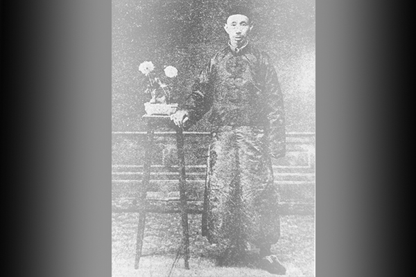
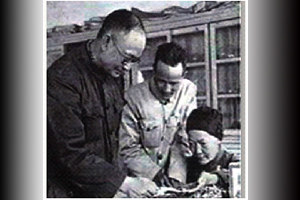
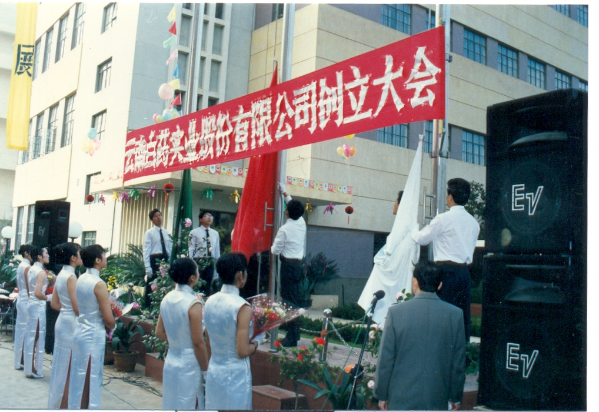
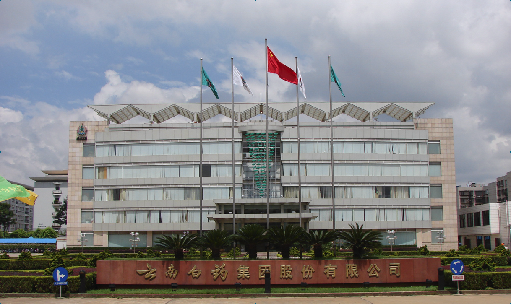
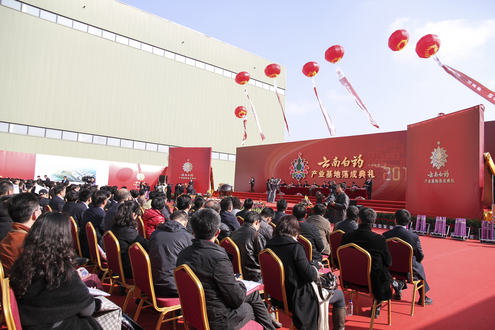
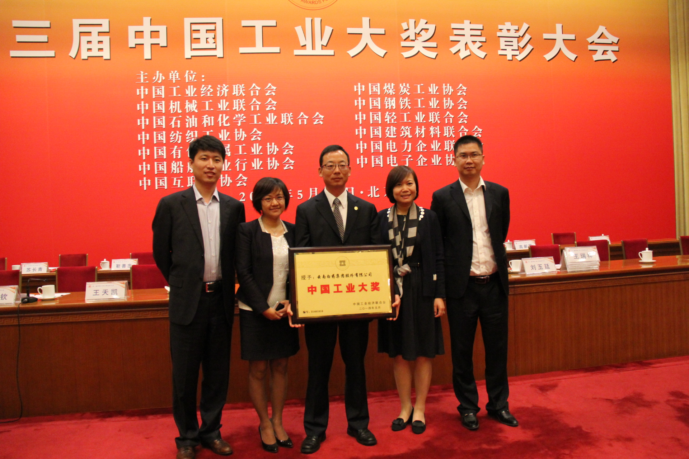
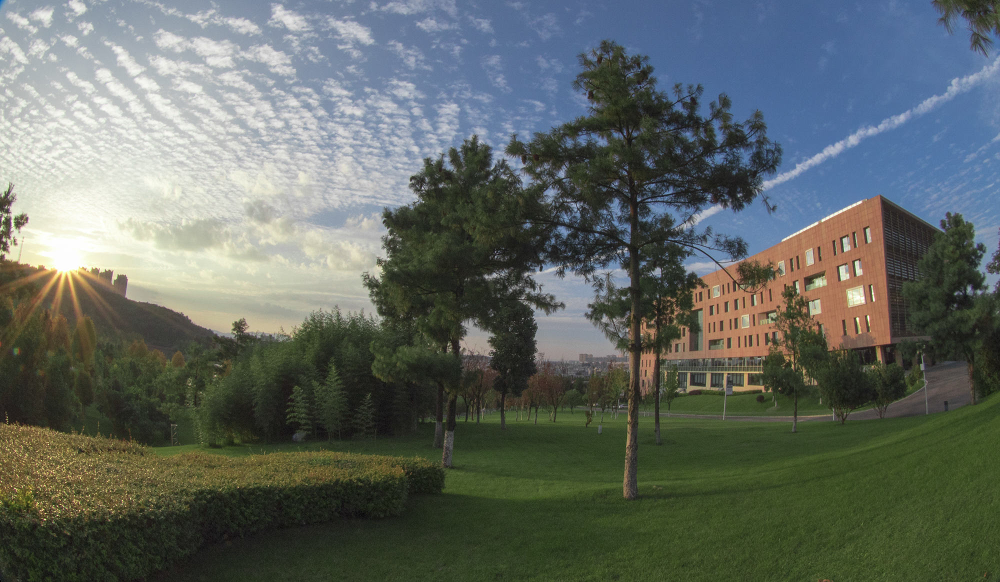

- 1902
- 1971
- 1993
-
1902
-
1955
-
1970
-
1993
-
1999
-
2006
-
2011
-
2012
-
2014
-
2016
-
2018
-

1902
年 【创制】曲焕章在行医过程注重探索各种草药配制之后的变化与用途，勇于创新。他既注意学习和继承中国的传统医学知识，又重视博采众长，遍尝上百种草药，经过多年的的反复试制、改进和验证，创制出对治疗跌打损伤、内脏出血有奇特功效的云南白药（百宝丹）。
-

1955
年 【献方】1955年10月，缪兰瑛由衷的感谢共产党和政府的关怀和照顾，并为了使百宝丹有更大的发展，更好的为人民服务，缪兰瑛将“曲焕章万应百宝丹”处方和技术全部贡献给国家。10月，经昆明市人民政府卫生局批准，将原曲焕章大药房库存药品、药材、物资等作价收买划归国营昆明市制药厂，“曲焕章万应百宝丹”改名为“云南白药”，由地方国营昆明市制药厂正式生产，确定了白药生产的工艺和质量标准，任命缪兰瑛为技师，负责白药生产的技术指导，并动工兴建白药车间。
-
 1970
1970年 【三条指示】6月，周恩来总理对云南白药的生产情况相当关心，要求云南省委抓好白药生产发展的工作，并做了三条指示：一、建立一个相当生产规模的云南白药专厂；二、建立云南白药专门的研究机构；三、云南白药原料植物由野生引为家种。
-

1993
年 【上市】5月，云南省体制改革委员会云体改〔1993〕48号文同意云南白药厂改制为云南白药实业股份有限公司。11月6日—9日“云白药”A股顺利发行2000万股，原始股价3.38元，12月15日“云白药”A股在深圳证券交易所挂牌上市，成为云南省第一家上市公司。
-
1999
年 【机制转换】11月，云南白药集团出资3000万元组建云南白药集团医药电子商务有限公司，营销工作的创新改造开始启动，顺利完成了营销网络和营销队伍的建设、新老模式的对接和营销方式的转变，使公司产品的市场基础得以夯实。营销系统的成功改制为公司进一步实施研发、生产和管理系统的创新改革奠定了良好的基础。
-

2006
年 【主要指标居首】2006年，公司各项工作顺利开展，2006年同比增长31%；实现净利润同比增长19.94%；实现利税同比增长33%，公司经营业绩连续第七年保持了健康发展的良好势头，各项主要经济指标跃居中医药行业首位，公司经营业绩得到证券市场充分认同，公司总市值居于沪深两市医药类上市公司之首，标志着云南白药从一个地方性的企业成长为一个全国性的企业，由行业的追随者成长为行业的领跑者。
-

2011
年 【搬迁】2011年10月，云南白药从生产了40年的昆明51号正式转场至呈贡区，整体搬迁项目的实施，促进了公司的产业升级、管理升级和服务升级。2011年12月，“云南白药产业基地落成典礼”成功举办，揭开了云南白药新的发展篇章。云南省委省政府领导亲临现场，对企业10余年的持续、快度发展给予了充分的肯定，鼓励云南白药通过“新白药、大健康”战略的实施，为云南省生物医药经济的发展探索新的发展路径，省委、省政府将将一如既往支持、扶持、培育云南白药。
-
 2012
2012年 【科技进步一等奖】2013年1月，中共中央、国务院在北京人民大会堂召开2012年度国家科学技术奖励大会，由云南省药物研究所独立完成的“低纬高原地区天然药物资源野外调查与研究开发”项目，荣获2012年度国家科学技术进步奖一等奖，填补了我国中医药行业国家科技进步一等奖近10年的空缺。
-

2014
年 【工业大奖】5月，第三届中国工业大奖表彰大会在人民大会堂举行，云南白药荣膺该项大奖。中国工业大奖是国务院批准设立的我国工业领域最高奖项，云南白药是云南省、中国西部地区及医药行业首个获奖企业。
-
 2016
2016年 【混改】12月，为全面深化国企改革，推进企业混合所有制改革试点，快速做强、做优、做大云南白药，云南省国资委、新华都实业集团股份有限公司、云南白药控股有限公司在昆明举行了合作协议签字仪式，拟通过完全增资的形式引入新华都实业集团股份有限公司作为云南白药控股有限公司的战略投资人。
-

2018
年 【吸收合并】2018年，云南白药集团吸收合并云南白药控股。云南白药通过发行股份的方式对白药控股实施吸收合并。云南白药为吸收合并方，白药控股为被吸收合并方。本次吸收合并完成后，云南白药为存续方，将承继及承接白药控股的全部资产、负债、合同及其他一切权利与义务，白药控股将注销法人资格；白药控股持有的上市公司股份将被注销，云南省国资委、新华都及江苏鱼跃将成为上市公司的股东。
-
白药词典
-
传奇故事
-
百草园
-
白药探秘
- 1956
- 1955
- 1951
- 1944
- 1938
- 1937
- 1935
- 1931
- 1930
- 1928
- 1927
- 1925
- 1924
- 1923
- 1922
- 1917
- 1916
- 1914
- 1913
- 1906
- 1902
- 1898
- 1880
1956年1月23日，昆明市制药厂申请生产“云南白药”，经昆明市卫生局（56）医字159号文批准，同年年2月昆明市制药厂五车间开始正式生产云南白药。
1956年1月23日，昆明市制药厂申请生产“云南白药”，经昆明市卫生局（56）医字159号文批准，同年年2月昆明市制药厂五车间开始正式生产云南白药。
1956年1月23日，昆明市制药厂申请生产“云南白药”，经昆明市卫生局（56）医字159号文批准，同年年2月昆明市制药厂五车间开始正式生产云南白药。
1955年10月，缪兰瑛由衷的感谢共产党和政府的关怀和照顾，并为了使百宝丹有更大的发展，更好的为人民服务，缪兰瑛将“曲焕章万应百宝丹”处方和技术全部贡献给国家。10月，经昆明市人民政府卫生局批准，将原曲焕章大药房库存药品、药材、物资等作价收买划归国营昆明市制药厂，“曲焕章万应百宝丹”改名为“云南白药”，由地方国营昆明市制药厂正式生产，确定了白药生产的工艺和质量标准，任命缪兰瑛为
新中国建立后，在人民政府的帮助下，缪兰瑛积极从事百宝丹生产，1951年10月“曲焕章万应百宝丹”在西南区工业展览会上展出，受到群众的欢迎，获得了西南区工业展览会甲等奖状。
5月1日，曲焕章大药房取得了“焕章、兰瑛、应龙父母子肖像（父母子牌）”商标。
3月，李宗仁亲率川、滇、鲁诸军，在台儿庄与日军浴血奋战，一举毙敌两万余人，60军官兵在台儿庄战役中，英勇顽强，许多将士负了伤，服用“百宝丹”后又冲锋陷阵，在激烈的战斗中，百宝丹的名声与抗日热潮一起传遍全国。8月16日，曲焕章在重庆中央医院请人代笔留下遗嘱，同年8月曲焕章在国民政府的逼迫与威胁下，终日抑郁，在重庆病逝，终年58岁。
9月，云南人民热烈欢送国民政府58军和60军北上抗日，曲焕章满腔爱国热情热血沸腾难抑，主动捐献3万瓶万应百宝丹给抗日官兵，为抗日贡献一份力量。到1938年，百宝丹的产量也因抗战的需要，年产量创纪录的达到了40万瓶。
4月红军长征经过云南，截获一批国民党物资，其中就有曲焕章万应百宝丹，这批百宝丹为治疗红军伤病员立下了汗马功劳。毛泽东的夫人贺子珍在威信受伤，时任红一军团政委的杨尚昆同志在沾益城外的白水被敌机炸伤，均靠百宝丹治愈，得以顺利走完长征。电影《万水千山》再现了这段历史。5月，蒋介石在云南省政府接见曲焕章，曲焕章赠送五百瓶三升百宝丹给蒋介石。蒋介石对曲焕章十分器重和赏识，亲书“功效十全”
5月，蒋介石在云南省政府接见曲焕章，曲焕章赠送五百瓶三升百宝丹给蒋介石。蒋介石对曲焕章十分器重和赏识，亲书“功效十全”的题词，外加一张半身照片，派其侄蒋孝先送赠，以示关照。通过一系列的运作，曲焕章的“万应百宝丹”赢来了一段高速发展的黄金时期。
7月26日，曲焕章大药房取得“焕章肖像”的商标注册。
12月，曲焕章万应百宝丹在云南省提倡国货委员会国货展览会上获得特等奖。
曲焕章辞去东陆医院职务，专心经营曲焕章大药房，并在30年代初将地址由南强街迁往金碧路，建造气势宏大的“曲焕章大药房”，开始规模化生产和销售曲焕章万应百宝丹。
曲焕章请跟随多年的帐房先生，清末举人周松年代笔撰写《草木篇》。
瓶装曲焕章万应百宝丹上市销售，声誉迅速传遍全国，并在香港、澳门、新加坡、雅加达、仰光、曼谷、横滨等处建立代销处。
云南政局混乱，曲焕章无心恋政，遂抓紧时间，刻苦钻研药理药效，集中精力总结临床经验。他对百宝丹进行反复验证，并不惜在自己身上实验，终于使百宝丹达到理想疗效。把百宝丹正式定名为“曲焕章万应百宝丹”，并设计了一药化三丹一子的方案，即普通百宝丹、重升百宝丹、三升百宝丹、保险子。发明了重伤者先服用保险子的疗法，能增强疗效，使百宝丹产品及疗效更加完善。
曲焕章因用百宝丹治愈了云南都督唐继尧部下吴学显的断腿，得到唐继尧赏识，唐继尧聘曲焕章为东陆医院滇医部主任兼教导团一等军医正，并亲题“药冠南滇”匾额。
1月26日，昆明市政公所核准发给曲焕章草科医士执照，曲焕章在昆明开设伤科诊所，开始了百宝丹的生产和销售。
时值孙中山在广州组织护法军政府，与北洋军阀对抗。滇军出师广西，吴学显的右腿骨被枪弹打断，法国医院、惠滇医院和陆军医院均认为截肢方能保性命，而曲焕章用百宝丹治好了吴学显的断腿，使其行走如故，吴学显赠“效验如神”匾额。
曲焕章考虑白药之名称颇多雷同，如苏打胃粉与种种西药皆与白药混称，曲焕章给白药另起一新名“百宝丹”，意思是白药像太上老君炼丹那样九转百炼而成。
曲焕章为打开白药销路，辞别妻儿，到通海挂牌行医。
曲焕章将白药呈送云南省警察厅卫生所检验合格，列案为优，申请列为正式药品，允许公开出售。
曲焕章回到阔别八年的家乡，进一步刻苦专研，集众之长对白药的疗效加以完善，曲氏白药自1902年起，渐渐闻名遐迩，声誉大振。在行医过程中曲焕章发现，白药不仅能治疗创伤，对疮疡痈疽，以及妇科、儿科某些病也有特效。
唐继尧由贵州都督调任云南都督后，派兵清剿土匪。滇南匪首吴学显被枪弹打伤胸腹，伤情严重，强请曲焕章治愈。曲焕章因恐再次惹祸，即避到阿迷州（现开远）行医。官府闻讯下令通缉追捕，曲焕章逃到宜良，被捕关进宜良监狱。其姐夫袁槐想方设法多方营救，最后经查实，曲系被迫医匪，不属通匪，准予无罪释放回原籍行医，不准再到匪区行医而了结。
曲焕章因被迫替匪疗伤，被他人诬告通匪，知县下令缉拿，曲闻讯由占恩易名为焕章，出门避祸，在个旧巧遇草医姚连均，便拜姚连均为师，学习治伤的秘方、秘法。曲焕章随姚行医于滇南各地，不耻下问，还求教当地民族医生和草药医生，经过多年苦心钻研，成功配制不少伤科名药，医术愈加精湛，终成滇南一带名医。
曲焕章在行医过程注重探索各种草药配制之后的变化与用途，勇于创新。他既注意学习和继承中国的传统医学知识，又重视博采众长，遍尝上百种草药，经过多年的的反复试制、改进和验证，创制出对治疗跌打损伤、内脏出血有奇特功效的云南白药（百宝丹）。
上门就医治病的人日益增多，曲焕章开始自己采购药材，加工配制万应丹及其它伤科药。凡有伤者，有求必应。并常到其它村镇出诊治伤，积累了治伤经验，成为当地小有名气的伤科医生。
8月，曲焕章出生于云南省江川县赵官村。